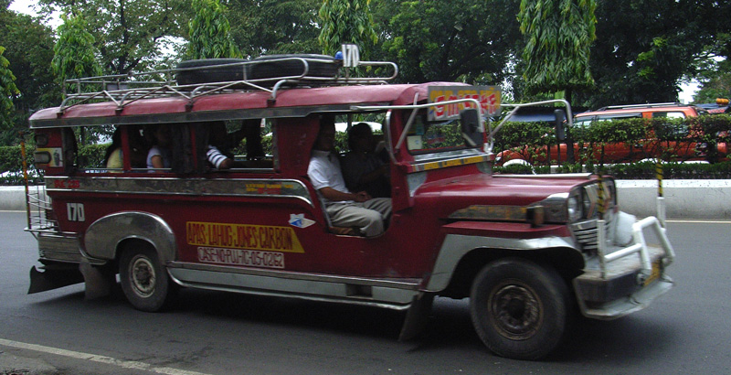
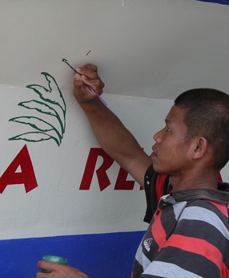
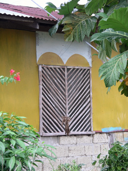
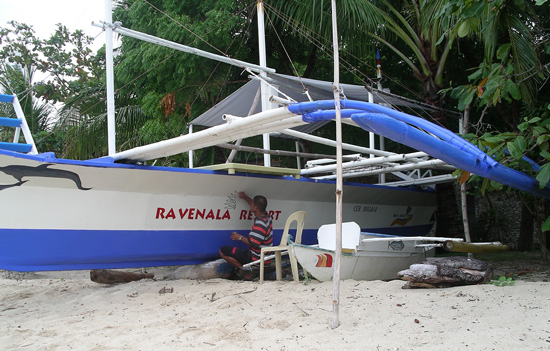
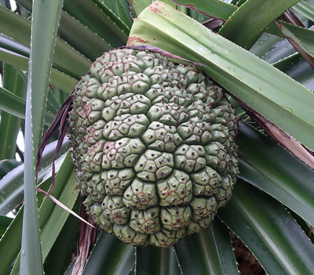
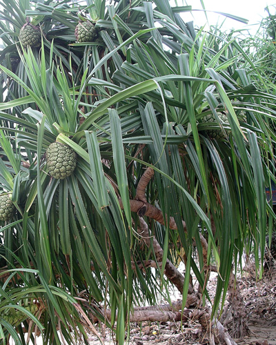
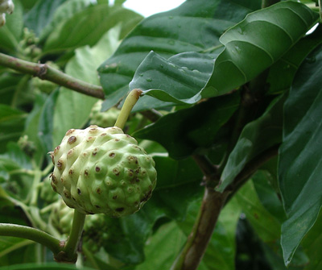
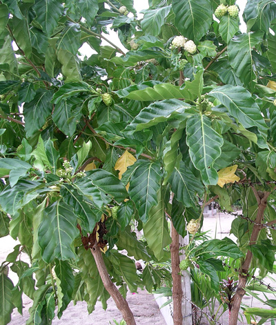
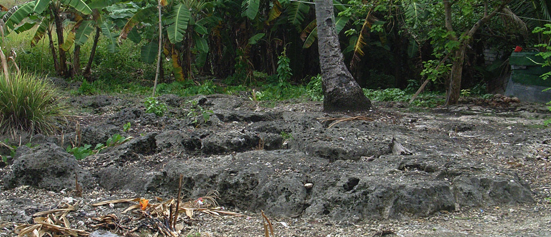

Philippines Trav-E-Logs ©
Cebu
|  | |
| back: Manila | Reminder of the American Military Legacy -- the Jeepney. |
================================= I didn't remember much about the geography of the Philippines before this trip, so here is a quick review. The four main regions are Luzon and Mindoro to the North, The Visayas in the middle, Mindanao to the south, and Palawan in the west, stretching almost to Borneo. Manila is on Luzon, as were the Subic Bay and Clark US military bases. Mindanao is where Abu Sayyaf and other notorious groups are based. Aside from Manila, three of the seven larger islands in the Visayas were visited: Bohol, Cebu, and Negros. =================================
September, 2006
|
Took a ship from the port of Manila down to Cebu, on the island by the same name. Expecting a Philippine version of Pelni (the major Indonesian Ship Line) was a mistake -- as the food was decent and cleanliness was second nature. Upon arrival, quickly found bus transport to Moal Boal in the southwest, and the beach of Panagsama. This is written up as a great snorkeling spot, with several dive shops along the beach. It was late, so decided snorkeling could wait until after a good night's sleep. Little did I know that a typhoon was about to make an appearance, and whip up the water to an opaque chocolate. During the next four days, managed to get some photos in the village between rain showers, and finally tried snorkeling when the wind let up. Let's just say the swim was enjoyable. More significantly, several of the photos have been added to the Bamboo Homes Special Topic. Open Philippine Bamboo Huts in new window. Throughout Southeast Asia it is amazing to see tasteful designs out of simple materials. Here is a side window on a simple hut down a side road near the village of Moal Boal. No Granite or marble here, but use of local materials and lots of flowers is the norm. These folks may not have much, but the smiles offered to a stranger walking down the road say they may enjoy life more than their counterparts in the West. Then it was past time to head back to Cebu city. Enjoyed taking photos of another reminder of the American Military Legacy -- the Jeepney. The original Jeepney was a US military jeep modified by extending the frame, and then decorating to make it truly Philippine. More photos in the Transportation Special Topic. Open Fun Transportation in new window. The following morning, the inter-island ferry service whisked me away to Bohol and the Chocolate Hills. Photos, clockwise from the top right: I call this fruit and tree Joshuloe; No name for this fruit and tree yet; Philippine Soil is Volcanic; Marine Artist at work   |     |
|  | |
Enjoy!
Bill
------------------------------
Email me at: "juno.com" preceded by an "@" and "dancer2SEAsia"
"The backpacker discovers people are beautiful everywhere. It's the Governments that are evil."
| jump to: Waiterang, Indonesia | soon: Bohol |
| back: Manila |